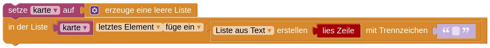
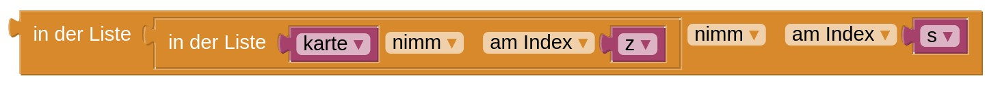

Baulwürfe (3. Runde Jugendwettbewerb, 2020)
Achtung! Das ist eine Alternativlösung zur Baulwurfaufgabe, die du davor bearbeiten solltest.
Ein Forschungsteam will das Verhalten der Maulwürfe untersuchen, die offenkundig, aber unterirdisch ein großes Feld bevölkern und dort ihre Hügel aufwerfen. Das Team hat das Feld gesichtet und dabei eine sogenannte Hügelkarte erstellt.
Eine Hügelkarte ist in kleine Planquadrate eingeteilt; jedes Planquadrat, auf dem sich ein Hügel befindet, ist mit X markiert. Hier ist ein Ausschnitt dieser Karte:
X XXX
X X
X X X
X XXX
XXX X
X X
X X X X
XXX
|
Beim Betrachten der Karte macht das Forschungsteam eine Entdeckung: Es kann nicht sein, dass dort nur gewöhnliche Maulwürfe leben. Ein Planquadrat mit einem normalen Maulwurfshügel ist nämlich immer rundum von Quadraten ohne Hügel umgeben.
Die Markierungen bilden aber auch wieder dieses Muster:
XXX
X X
X X
XXX
|
Im Forschungsteam herrscht große Aufregung: Es muss sich um eine neue Maulwurfsart handeln, die ihre Hügel zu solch rechteckigen Bauen formiert. Die Forscher taufen sie „Baulwürfe“. Ihre Hügel liegen manchmal direkt nebeneinander, überlappen sich aber nie.
In der Eingabe stehen zwei Zahlen, die angeben wie breit und hoch die Karte ist. Anschließend folgt die Hügelkarte.
Dein Programm soll eine Karte, die 3x3 Felder groß ist, einlesen und prüfen, ob es sich hierbei um einen normalen Maulwurfsbau, umgeben von freien Feldern, handelt.
Gib "normaler Maulwurf" aus, falls in der Mitte der Karte ein einzelner Maulwurfsbau ohne benachbarte Baue steht, und sonst "kein Maulwurf".
Dein Programm soll die Anzahl aller normalen Maulwurfsbaue bestimmen. Dafür kannst du z.B. durch die Karte laufen und schauen, ob ein markiertes Feld rundherum von freien Feldern umgeben ist.
Dein Programm soll die Anzahl aller Baulwurfsbaue bestimmen. Dazu kannst du schauen, welche Einträge auf der Karte zu Maulwürfen gehören, und wenn du diese ignorierst, feststellen, welche/wie viele "X" demnach zu Baulwurfsbauen gehören.
Tipp: Du kannst zum Beispiel über die Karte laufen und alle "X" zählen, aber auch zählen, wie viele einzeln stehende normale Maulwurfshügel auf der Karte sind. Weil jeder Baulwurfsbau aus genau 10 "X" Markierungen besteht, kannst du dir die Anzahl ausrechnen, wenn du weißt wie viele "X" auf der Karte stehen und wie viele Maulwürfe verzeichnet sind.
Unter "weitere Hinweise" findest du Erklärungen zum Arbeiten mit der Karte.
Weitere Hinweise:
Du kannst die Karte als Liste speichern. In der Liste sind die Zeilen der Karte als Einträge gespeichert; jede Zeile kannst du entweder als einfachen Text speichern oder sie alternativ als Liste interpretieren, sodass jede Lücke und jedes X ein eigener Eintrag sind. Dazu kannst du den Baustein Liste aus Text erstellen verwenden. Erinnerung: Wenn du als Trennzeichen "" (gar nichts) angibst, wird jedes Zeichen als neuer Listeneintrag gewertet.
Dieser Code würde eine leere Liste erstellen und in diese als ersten (und einzigen) Eintrag eine Liste schreiben, die aus den Buchstaben in der Eingabezeile besteht:

Wenn wir die Karte als Liste von Listen speichern, können wir so auf das Element in der Zeile z und der Spalte s zugreifen:

Für die Karte gespeichert als Liste von Texten sähe das so aus:
Um auf Nachbarfelder eines Eintrags in der Karte zuzugreifen, können wir nach Belieben bei dem Zeilen- und/oder Spaltenindex 1 addieren oder subtrahieren. Allerdings muss man hier aufpassen, dass nicht Nachbarzellen von Zellen, die schon am Rand der Karte liegen, nicht mehr auf der Karte abgebildet sind.
Bevor wir also auf Nachbarn zugreifen, sollten wir also prüfen, ob diese Nachbarzellen noch in der Karte liegen. Das ist genau dann der Fall, wenn der Zeilen- und Spaltenindex jeweils echt größer als 0 sind sowie der Zeilenindex kleinergleich der Höhe, der Spaltenindex kleinergleich der Breite der Karte sind. Das können wir zum Beispiel so prüfen:

Wenn wir über eine Liste laufen und jeden Eintrag genau einmal anschauen wollen, bietet sich eine Schleife an. Da wir Zeilen und Spalten jeweils durchlaufen wollen, nehmen wir daher das folgende Konstrukt:

Die Zeile wird von 1 bis zur Höhe der Karte durchgezählt; damit schauen wir uns jede Zeile nacheinander an. In dieser Schleife steckt dann die zweite Schleife. Diese zählt in der Laufvariable "spalte" von 1 bis zur Breite der Karte die aktuelle Spalte.
In der Schleife könnten wir jetzt zum Beispiel den aktuellen Eintrag in der Karte an der Stelle "zeile", "spalte" auslesen oder uns z.B. überlegen, ob dort ein Baulwurf leben könnte.
Algorithmisch könntest du zum Beispiel ungefähr so vorgehen: Setze eine Varible BaulwurfXAnzahl auf 0. Für jedes Feld in der Karte prüfe, ob es ein "X" ist. Falls es sich nicht um einen einzelnen Maulwurf handelt, muss es Teil eines Baulwurfbaus sein, erhöhe also BaulwurfXAnzahl um 1. Weil jeder Bau aus 10 "X" besteht, musst du diesen Wert nur noch durch 10 teilen.
Beachte: Dein Programm muss mit allen Testfällen zurechtkommen.